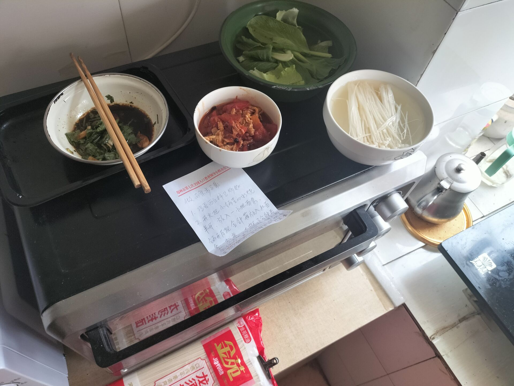
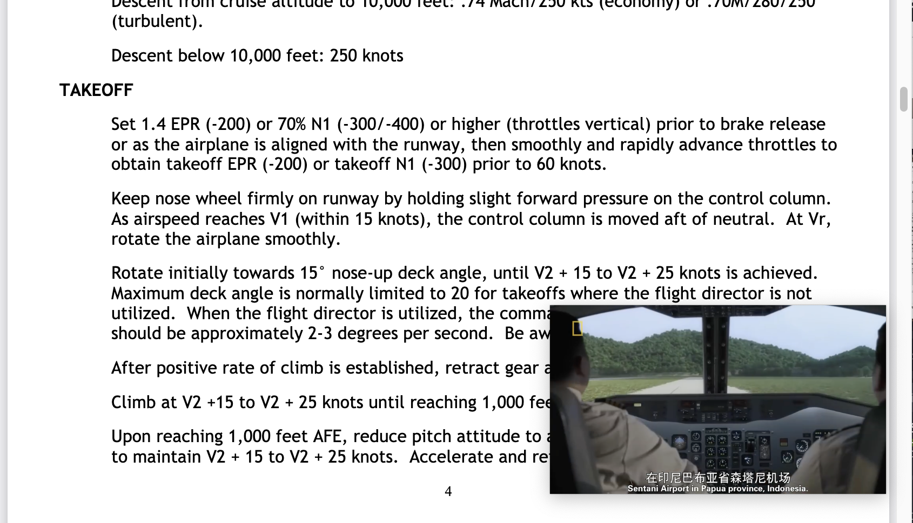
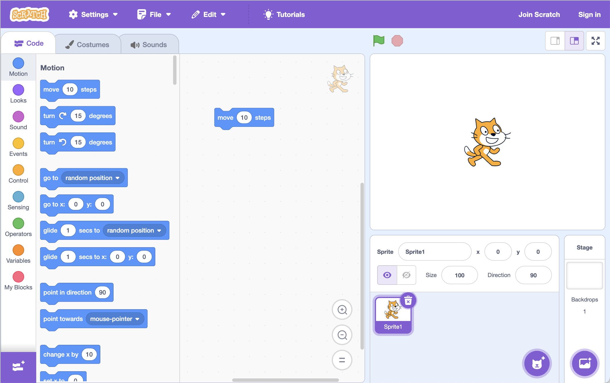
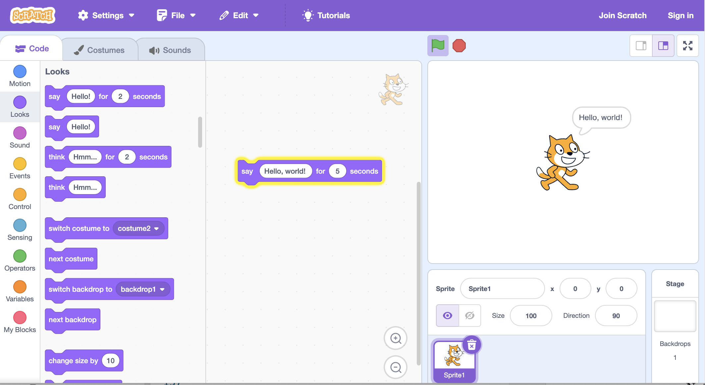
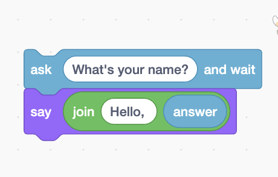
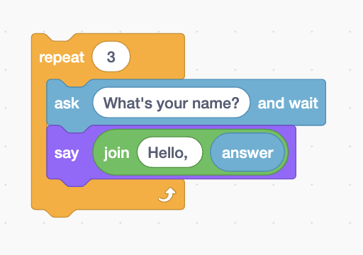

$$ \Huge \textbf{Machines} $$
$$ \boxed{ \overbrace{\textit{degaokaolization}}^{\small{去高考化}} \text{ Discussion Group | Topic 03A}} $$
We have witnessed how powerful computers are. By inputing some instructions, the computer will get the desired output.
For now, we will go to a slightly different routine about how computes are capable of doing things. That is exactly following the instructions.
Imagine that, you are going to find a word in Oxford Advanced Learners' Dictionary. You definitely don't want to examine the dictionary page by page. Instead, you may switch to half of the book, and gradually narrowing the search space.
When you decide to tell the techique to another person, here is a possibility of saying
To find a given word in the dictionary,
First, open the dictionary to the middle,
Then, compare the given word and decide which side is it,
Continue this pattern to the left or right part of the dictionary,
until you have only one page left.
Your friend sometimes find it vague, but after your careful demonstration, he is finally able to master this skill.
In fact, there are many things that are definite. That is, the procedure of doing this is almost fixed, and you will have the pattern of the problem, and your goal is clear. As you have learnt in high school, if you can somehow prove your procedure will never end up into a infinite loop, your procedure is then called algorithm, with pattern of the problem called input, and the goal you needed called output. And the way translating input to output is known as an algorithm.
Procedure: Find the word
1 Get the dictionary
2 Open to the middle of the dictionary
3 Look at the page
4 If word is on page
5 Read the word
6 else if person is in earlier of the book
7 Open to middle of left half of book
8 go back to line 3
9 else if person is in later of the book
10 Open to middle of right half of book
11 go back to line 3
12 else
13 Quit
Some use the following diagram to represent the relationship between the input and the output. The algorithm is represent as a black box - that means we don't care about how algorithms are implemented, and we sometimes only care about what inputs and outputs are, hence we are able to use them easier regardless of the details.
+---------------------+
| |
Input>---\ | Algorithm | /----->Output
----- the Black Box ------
| |
| |
+---------------------+
How to eat noodles? Well, there is a procedure for this:

How do we fly an airplane? Well, here is a procedure for pilots to execute: (Side Note: Here is something about Boeing 737, Figure from Air Crash Investigation.)

We use computer to store documents, watch videos, and surfing the Internet. These information is stored usually as bits. It's just like a small lever in computer system, indicating its state - on for 1 and off for 0.
Let's begin with the representation of a number. We have known that the pattern is like this:
o o o o o o o o
128 64 32 16 8 4 2 1
When a light is on, you add the label below to the number in your head. After examining all bits, you get your final number.
But sometimes, we can alter the rules so that we can represent something different. For example, if I give the rule
o o o o o o o o
-128 64 32 16 8 4 2 1
then it's capable of representing negative numbers!
So we can conclude that information we want to represent is bits + contexts. Videos, characters and even programs are expressed merely by bits!
Aside. We usually count 8 bits as a byte, usually denote as B. With the prefix \(\texttt K=10^3, \texttt M=10^6, \texttt G=10^9\) , we may be easier to represent bigger numbers.
Now we will use a more visual way to note the idea of "algorithms". To do this, we need a new world with a sprite in it.

This is Scratch. As you can see, a cat is standing in the center of the stage. Namely we can say it's standing at croodinate \((0,0)\) . Normally, the stage is 480 px(px is a unit representing length, like centimeter) wide and 360 px long. On the left, here are many instructions. From the motion of the character to the blocks.
This is pretty like some jigsaw puzzles you have played earlier. Now let's have a look at the pieces given.
Now let's start our exploration.
We may drag the pieces to let our cat greet to us.
Let's first use the "say" block from the left and typing in "Hello, world. " After clicking on it, we will see the cat saying: Hello, world.

Well, what if I want it to give a response of certain names? This involves grabbing different blocks into the blanks. After some trial, we build the following:

What about greet 3 times to 3 person?
A plain idea is to copy-paste this one three times. But as you move your eyes to the "controls" section, you will see the loop option.
After some exploration, you will end up having this configuration:

Sometimes we might want to make our own blocks. We now encounter the most fundamental idea, the idea of abstraction. That is, making many things packed and ignore the details.
We can click on the make the block button to add a own block, for now, we will click OK. Using this block will shadow all the details underlying them.
$$ -\mathscr {E}\text{nd of the note}- $$